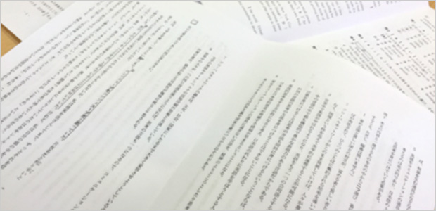

昨日千葉県立高校の前期入試が終わりました。
まだ後期が残っているので完全終結とはいきませんが、2ヶ月に渡る過酷な受験シーズンも山を超えた感がありますね。
以前にも書きましたが、長い受験日程子どもはもちろんのこと親も本当に消耗すると思います。
「子どもも頑張っているのだから私もガンバらなくちゃ」
あるいは
「もうどこでも良いから早く決まってこの重圧から解放されたい！」
こんな思いに駆られる親御さんも多いのではないでしょうか。
お気持ちをお察しいたします。親も闘っているわけですからね。
本当にお疲れさまです。
すでに進学先が決まった方、合格待ちの方、後期に備えて必死に頑張っている方など色々でしょうが、皆さんにお伝えしたいことがあります。
入試が終わったら入試のことはいったん全て忘れて下さい。
これは親御さんも同様です。
理由はいくつかありますが、過ぎたことをいつまでもアレコレ考えたり引きずったりしてはいけないということです。
私は昔、私立高校の講師をいくつか掛け持ちで勤めたことがあります。
これは都内のある進学校（男子校）に勤務していたときの話ですが、そこで全くヤル気のない一人の生徒と出会いました。
仮にA君としておきます。
このA君、頭は良いのに宿題はやって来ないし態度はヘラヘラしていて定期テストも悪い。あげく賭けマージャンで停学をくらう始末。
でも、明るい性格で授業中もよく冗談を飛ばし皆を笑わせるなど決して悪い子ではないのです。ムードメーカーというかリーダーシップもあった。
ただ、「先生、今度原宿に一緒にナンパしに行きましょうよ♪」などと悪ノリするのには閉口しましたが…(笑)。←男子校のノリです。
で、ある時私はA君に言ったことがあります。
「おいA お前は頭がいいのになぜ勉強しないの？」
するとA君、珍しく真剣な表情でこう言ったのです。
「先生、俺はこの学校第一志望で入ったんじゃないし。本当は○○高校行きたかったけどここしか受からなかった…。だからヤル気なんか出ねぇよ。」
実はA君のような例はけっこう多いのです。
第一志望じゃなかった。スベリ止めだった。
だからヤル気出ない。そういう論法です。
これを甘ったれてると断罪するのは易しいことですが「この学校行きたかったとこじゃないから」を口実にする子は多いのです。
確かに気持ちは分からないではありません。せっかくそこ（第一志望）を目指して来たのですから。
しかしやっぱりこの態度はいけません。
入試の合否は一つの結果に過ぎません。
つらいかも知れませんが受かったところがふさわしい場所であると考え直して下さい。
行った先には必ず新しい出会いが待っています。
友人かも知れない。先生かも知れない。
知識や情報かも知れません。
いずれにしろ何らかの縁があるのです。
人間はどこへ行こうとその場その場で本領を発揮できるのです。
あそこだったら輝けるのにここでは輝けない。
ということはないのです。
あと、もう少しガンバっていればとかあの問題本当は取れたはずなのに…という後悔もあるかも知れませんが終わった以上引きずらないこと。
良い経験と割り切って頭を切り替えましょう。
逆に順調に合格した人も同様です。
一時は喜んでも、「俺って頭いいぜ」とか「入試なんてチョロい」などといつまでも変に優越感に浸らないこと。
入試が終わったら入試を忘れる。過去は振り返らない。
その上で新たな環境へ新たな気持ちで進みましょう。色々考えたり悩んでその「問題」を自分の中で膨らませてはいけません。
1つの経験。1つの教訓として胸にしまい込んだら次に進みましょう。
入試に限らずどんな経験も「自分一人だけの力」で決まるわけではないからです。
受かった人も、家族や先生のサポートや友人の励ましがあったればこそだろうし、不合格の人だってたまたま体調不良だったり、あがって実力が出し切れなかったとか様々な要因があった結果です。
いたずらに過去をふり返えることは、この様々な要因から成る全体像を見失ってしまうからです。
受験生泣かせの入試問題が多い
ところで話はガラッと変わります。ここからは少し大人向けの話になります。
高校入試で出題される「問題」についてです。
実はこの10年ほど県立や都立などの公立高校の入試問題、その傾向がハッキリと変化しています。
詳しくはイベントでもお話しますが、一口で言って難しくなった。得点しづらくなっていると言えます。
しかしこれは悪いことではなく、全体に良く練られた良問が増えているという意味でむしろ歓迎すべき傾向と私たちは考えています。
なぜなら難しいといっても、ガリ勉が必要ということではなく、受験生の発想力や柔軟性を色々な角度から丁寧に見ようという「誠意」が感じられるからです。
従来のように受験テクニックや知識のつめこみは必要ないという点で、良く工夫されているのです。その代わり普段から「考える力」を養っていなければならないことは確かですが…。
私としては、無意味な「つめこみ」より受験生の負担を減らすという意味で、公立校の問題傾向を歓迎したいと思っています。
一方、私立高校の入試問題は完全に二極化しています。
学校によって良問を課す所とそうでない所が分かれてしまっているのです。
私立は受験者も多く問題作りは大変でしょうが、それにしても一部の高校の問題はひど過ぎます。
問題集などにのっているものをほとんどそのまま出題していたり、相変わらずの典型的なパターン問題だったりと何の工夫もポリシーもないモノを平然と出している。
要するに問題作りが雑。
非常に残念です！！
私立は建学の精神があり、どのような生徒どのような能力をもった生徒に来てもらいたいか、明確な理念に基づいた方針があるはずです。
その方針が入試問題に反映されているはずです。
ところが一部の私立校の入試問題は、やたら知識の量を問うていたり、無個性なパターン問題ばかりで、正直言って「誠意」が感じられないのです。
生徒の何を見たいのか。どんな生徒を取りたいのか全く不明なのです。
今年は特にこの傾向がひどいように思います。
私たちは専門家なので「こんな変テコリンな問題別に解けなくたって恥じゃないよなァ」などと言い合っているだけですが、この変テコリンな問題をやらされて落ちた生徒はどう感じるでしょう。
私たちのように「問題の質」を客観的に判別する力はありません。当然、落ちた自分を責めるでしょう。「自分に力がないからダメだったのだ」と。
受かる落ちる以前にこれでは受験生がかわいそうすぎます。
私立校へは「どうかもう少し公正に生徒の力を見る問題を」
と強くお願いする次第です。
この問題については実際の資料（最新の入試問題）に基づいて2月22日（日）のイベント（⇒月イチお話会）でも、お話していくつもりです。
最後に受験生をお持ちの親御さんへひとこと。
冒頭でもお話したように入試の合否は実力の外に、時の運や（最初に述べた）様々な要因が絡んでいます。
入試問題そのものの質もその1つです。
だから受かってもダメでも必ずしもお子さまの「実力」だけに原因を求めないこと。
成功してもうぬぼれず失敗しても落ち込まない。
入試が終わったらホッとしたいところですが、ここは大事なポイントなのでお子さまへの最終ケアとしてよろしくご指導下さい。
本当にお疲れさまです。